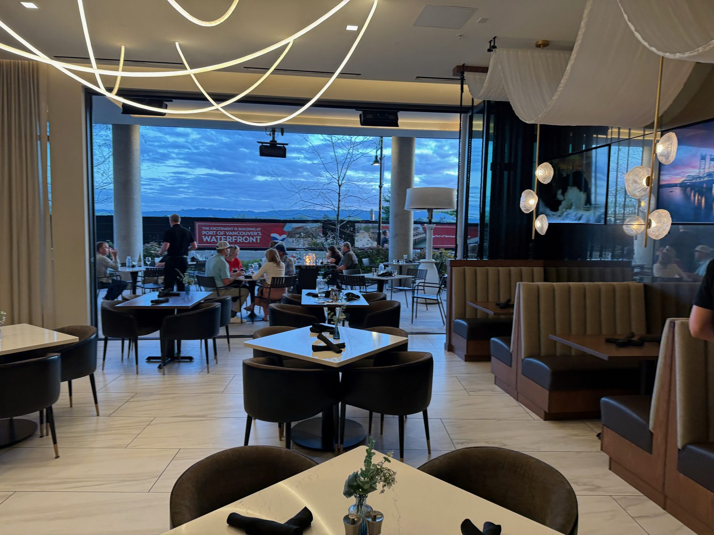
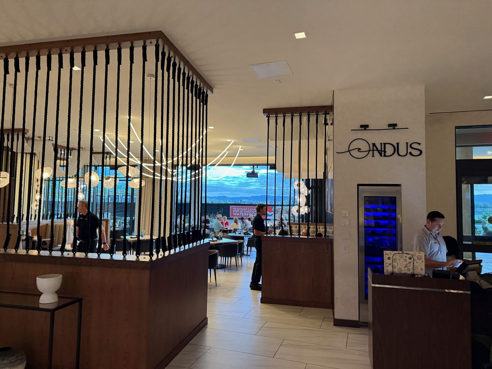
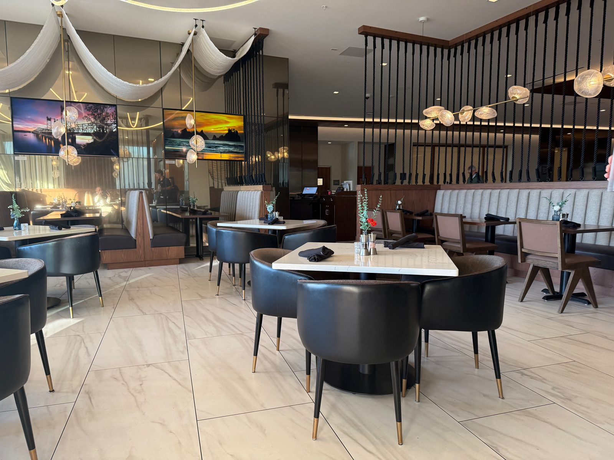
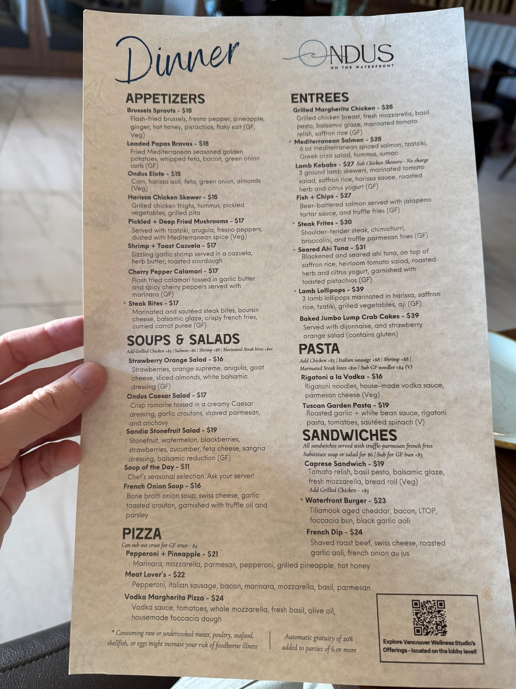
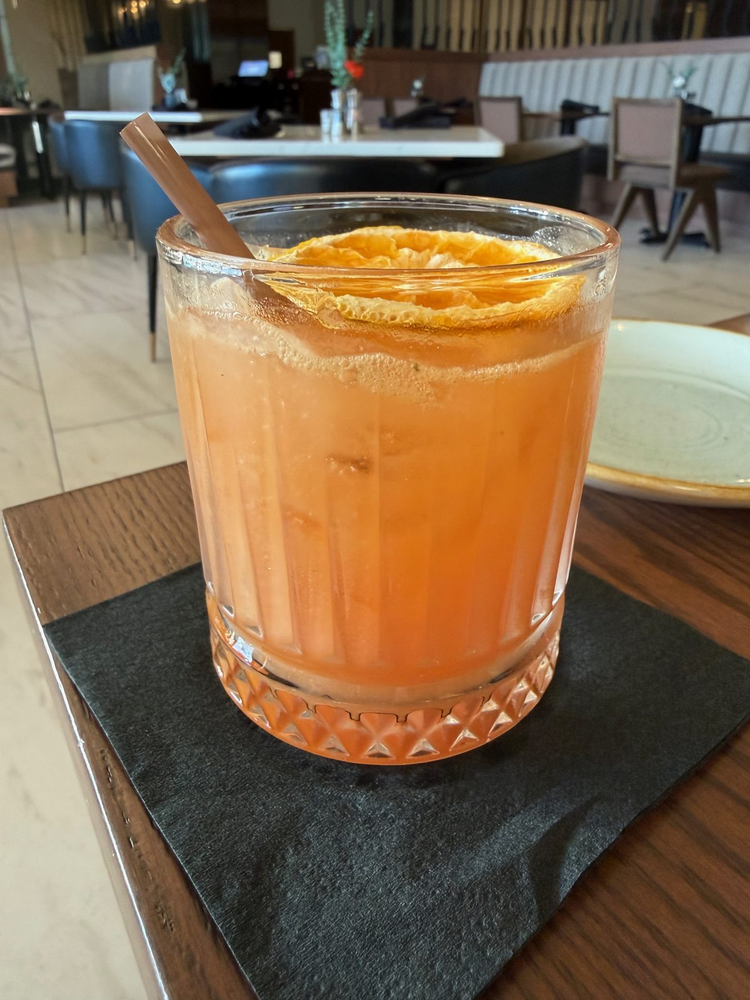
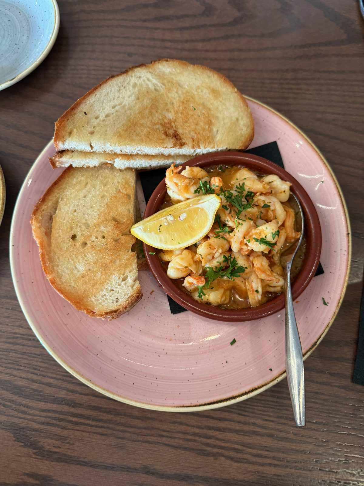
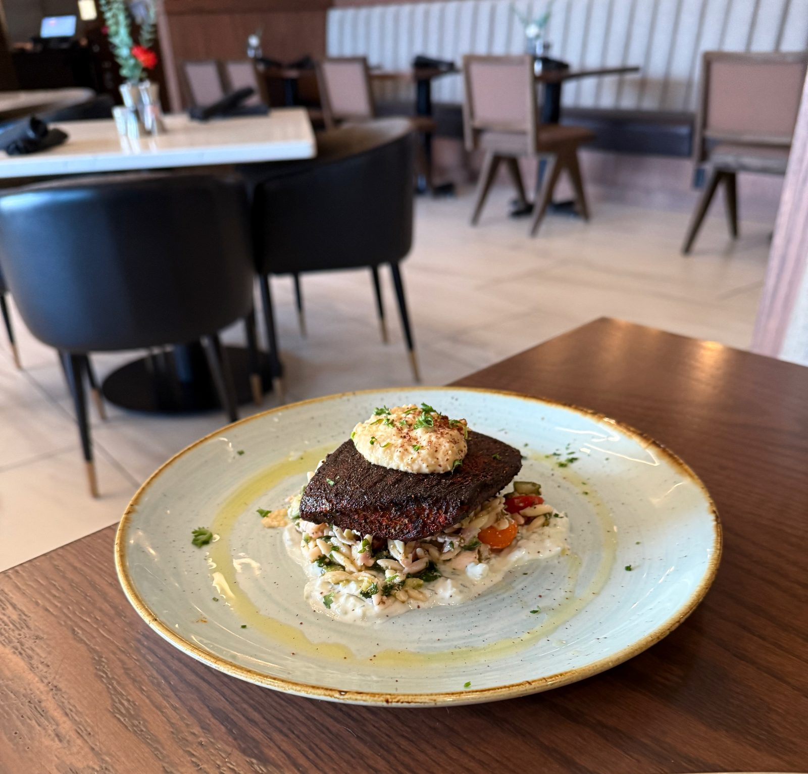
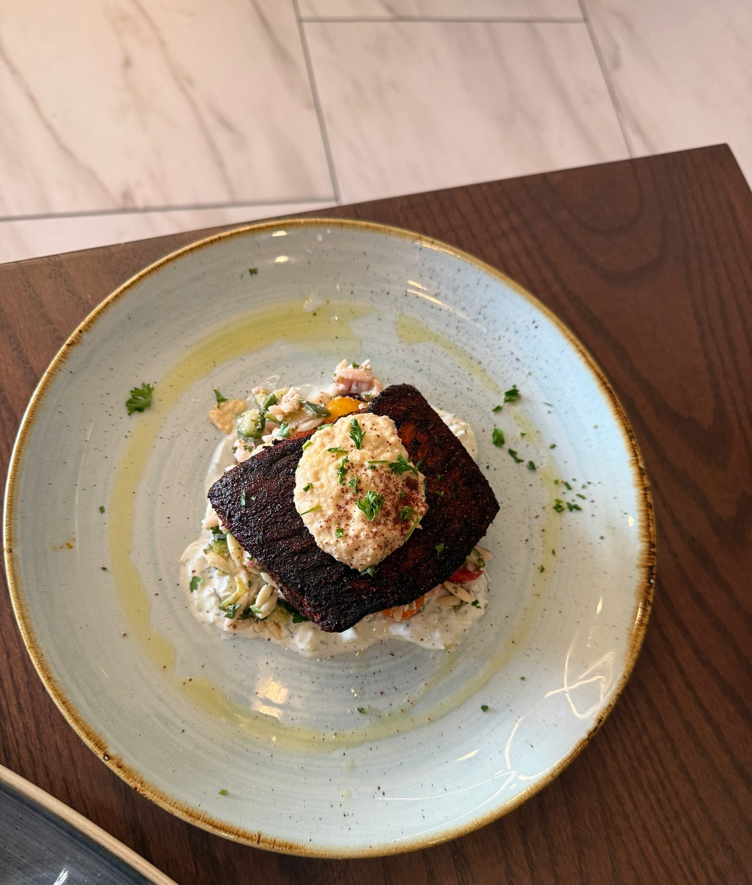
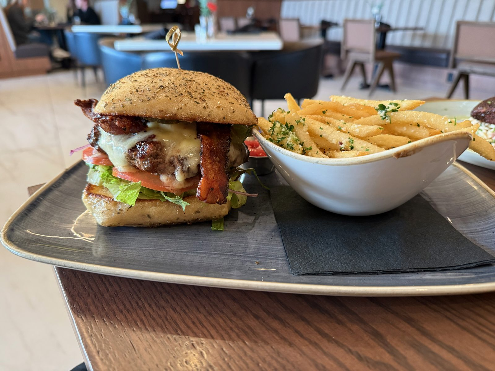
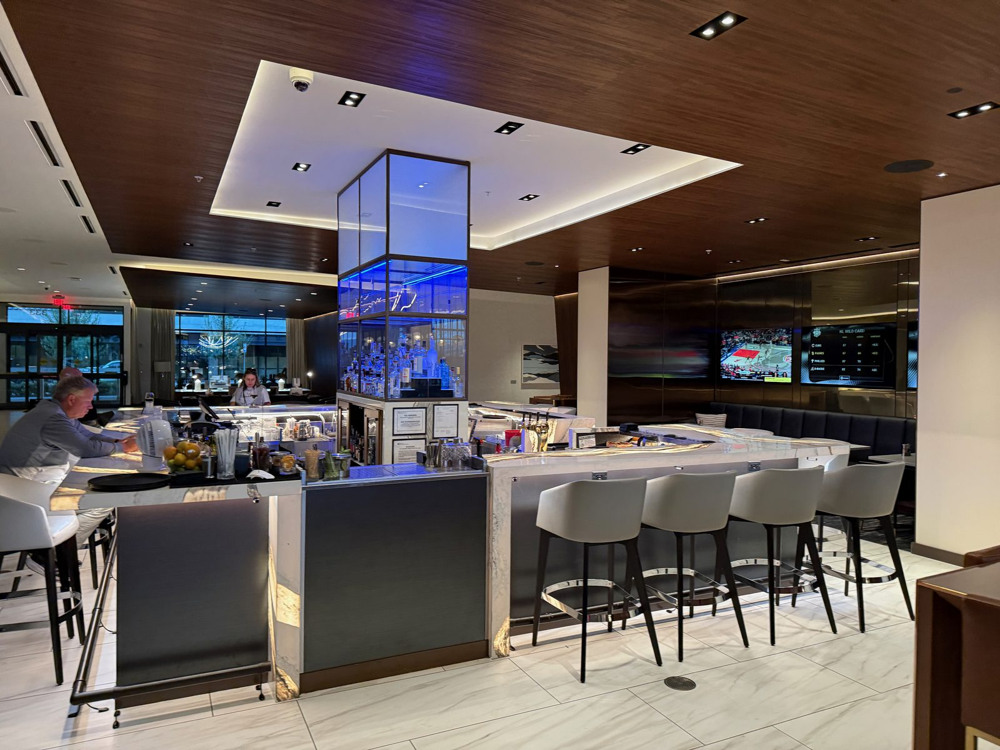

A Burger a Size Too Big, and Shrimp Worth the Drive

Ondus on the Waterfront sits inside the AC Hotel on Vancouver, Washington's stretch of riverfront, and I'd been calling it "Ondas" in my head the whole drive over. Turns out that's a smaller miss than it sounds — both words trace back to the same Latin root, unda, meaning wave, and the little mark above the wordmark on the wall by the host stand (below) isn't decoration, it's a wave, drawn plain and simple. Which is a nicely appropriate name and logo for a restaurant sitting close enough to the Columbia River to watch the light change on it through a wall of glass. Floor-to-ceiling windows fold open onto a patio, the river a few hundred feet away, and the sky was doing something genuinely nice with the color orange by the time we left.

What the dining room looks like before it fills up
We got there early enough that most of the room was still empty — marble-look tile, black barrel chairs with little brass feet, and two big backlit photos on the mirrored wall showing local sunset shots, which felt a little on-the-nose for a restaurant that's about to hand you the real thing through its own windows an hour later.

The dinner menu (below) is Mediterranean-leaning without committing to any one country's version of it — harissa next to tzatziki next to a vodka rigatoni, plus a proper burger and fish and chips for anyone who wandered in wanting neither hummus nor orzo.

A cocktail showed up first — a POG Rum, the classic passionfruit-orange-guava mix built on rum, dehydrated citrus wheel and metal straw included (below) — and it did exactly the job a first drink is supposed to do at a table with a view.

The garlic shrimp I'd drive back for on its own
The Shrimp + Toast Cazuela is the dish I keep thinking about. Sizzling garlic shrimp in a little cazuela dish, and the sauce underneath — to my taste it read like butter and white wine reduced down together, garlicky and rich, with a delicious hint of lemon citrus running through it that kept the whole thing bright instead of heavy — with two slabs of toasted sourdough for mopping it up (pictured below). I wouldn't drive across town for a burger, and I'll get to why in a minute, but I would drive across town for that sauce and whatever else they've got going on in that kitchen. It's the best thing that came to our table all night, and it's an appetizer.

Two entrees, one plate each a little different from what I expected
The salmon came out first, set down on the table with the dining room still going about its evening behind it (below), the Waterfront Burger right behind it.



The Mediterranean Salmon was yummy and, importantly, not dry — a 6-ounce fillet with a real blackened crust, sitting on a Greek orzo salad with tzatziki worked through it, that dollop of hummus and a dusting of sumac on top. Good salmon. Honest opinion, though: it's not quite as good as the stuffed salmon at Oswego Grill. Different preparations entirely — this one's spiced and blackened, that one's stuffed — so it's not really a fair fight, but if someone asked me to rank the two salmon dishes in my recent memory, Oswego Grill still wins.
The Waterfront Burger — Tillamook aged cheddar, bacon, lettuce, tomato, pickle, black garlic aioli, on a foccacia bun — was genuinely good. Not dry, cooked right, proper melt on the cheese. My complaint is an unusual one for a burger: it was too large. Not in a bad way, exactly, just more sandwich than I needed for one sitting, which isn't a complaint I get to make often. It's a fine burger. I've had better in this same city — a notch below Habit Burger & Grill, if I'm putting Vancouver's burgers in a line — and it's not the dish that would pull me back across town on its own the way the shrimp would.
Is Ondus on the Waterfront worth it?
Between the two plates and that cocktail, the room filled in and the sky outside finished its job — bar area lit up blue at the center of the room, dining room emptying toward the open patio doors as people moved out to catch the last of it (below).

Skip the burger question entirely and just order the shrimp — that's the whole review, if you only read one line of it.
The practical bit
Ondus on the Waterfront — 333 West Columbia Way, Vancouver, Washington 98660, inside the AC Hotel by Marriott. 📍 Get directions
Hours: Breakfast Mon–Fri 6:30–11am, Sat–Sun 6:30am–noon. Lunch daily 11am–3pm (Sat–Sun from noon). Dinner Sun–Thurs 3–10pm, Fri–Sat 3–11pm. Phone: (360) 360-5291.
Worth knowing: Go for the view at golden hour if you can time it — ask for a table near the patio doors. And whatever else you order, get the Shrimp + Toast Cazuela; it's the strongest thing on the menu by a clear margin.